用 Grok Bot 赚钱？我翻了一个多月的 X，真跑通的都长一个样
最近在写 Grok Bot 的教程。动笔之前，我想先看看别人到底是怎么用它的：不是"帮我订个餐厅"那种一般用法，而是真的拿它把一门生意闭环起来、自己一个人跑出一条赚钱的 loop。
于是我把 9 月 15 号 Grok Bot 发布到今天（10 月 23 号）X 上相关的帖子翻了一遍。先说结论：
真跑通的，几乎都是本来就有生意的人。 他们拿 bot 把已有业务里获客、报价、合同、开票这些环节串起来。从零开始、独立赚到钱的，目前只有三种：Day 1 的公开实验、提示词模板，和很可疑的收益截图。
下面展开说。
一、真跑通的长什么样
挑几个我觉得最像样的。
物业管理公司老板。 这是我看到最完整的一条获客链路：Grok Bot 做的邮寄传单，扫二维码进它做的网站，再到 Google 商家页和它代写的博客，客户填表以后它秒回、约电话，还顺手查了对方名下有哪些物业，给老板做一份简报。从询盘到发出合同，2 小时，新接了 6 套房。原帖
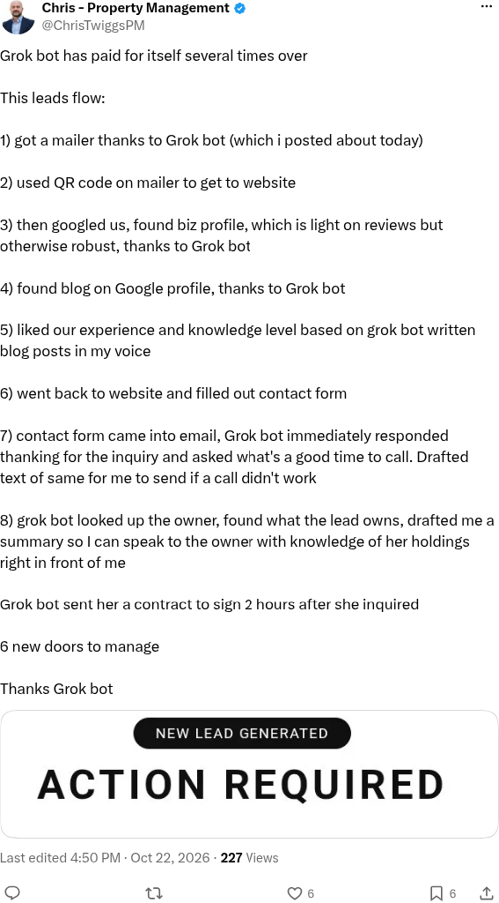
波兰的一人公司。 做 X 创作者分成，4 个月大概 1.1 万美元。他用 16 个 agent 管发票、合作、创作者合同、审批和 X 上的内容，迁移只花了大约 5% 的周额度。但这条最有价值的是他写的踩坑：国家电子发票系统要证书、API 很难接；会计只收邮件里的 PDF；常用的开票工具刚泄露过 API key。他的结论是：AI 是容易的部分，难的是那些为纸面设计的外部系统。原帖
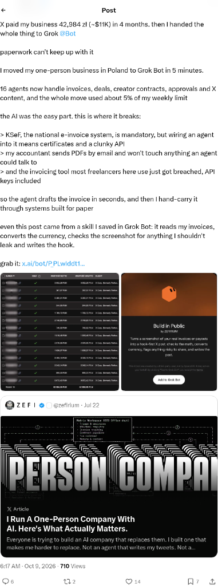
建筑商。 本来要招一个年薪 8 万美元以上的人，现在用 Grok Bot 每月不到 500 美元：处理文书、在线申请施工许可、出方案、改带工程图的许可包、走 DocuSign。原帖
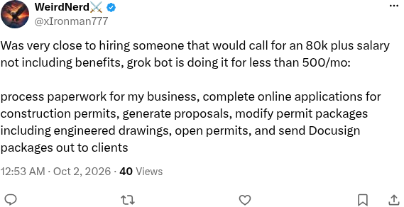
木作工坊。 从邮件里识别出询价，自动建项目文件夹、建看板任务、分配负责人，回复慢了会提醒。顺手把网站 SEO 也补了：94 张图里 91 张缺的 alt 补上，提交 sitemap，之前 7 个页面只收录了 2 个。原帖
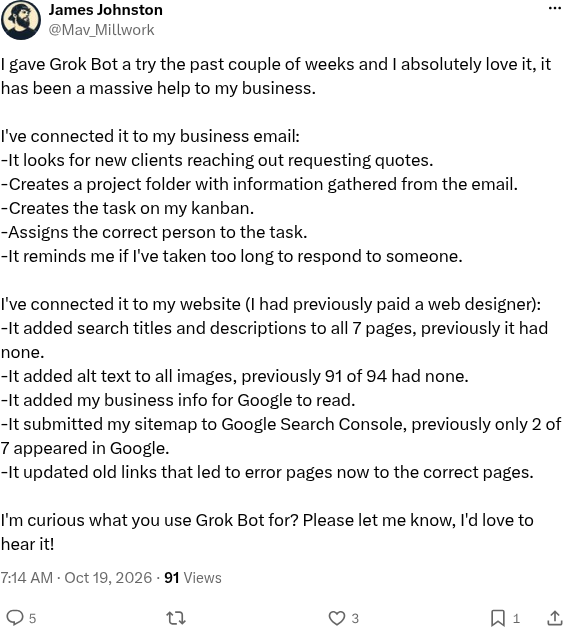
Google Ads 代运营。 每个广告账户配一个 bot，一个在 WhatsApp 接网站来的线索，一个负责跟进，routine 只把需要他拍板的事带到他面前。原帖
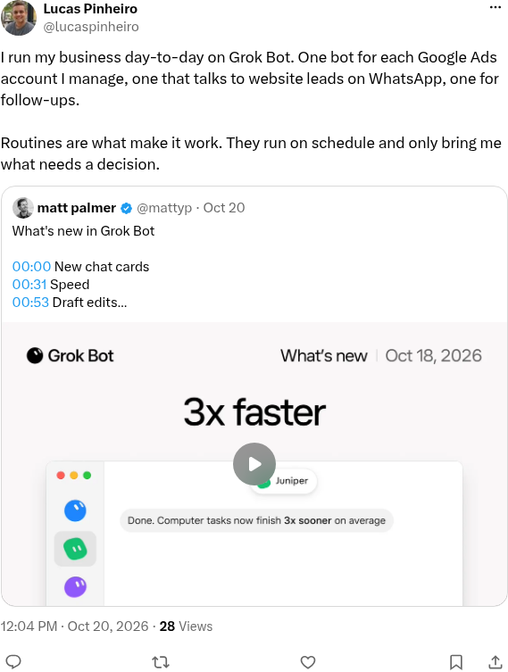
水下机器人厂。 6 个 bot：邮件分拣、重写产品手册、找客户写销售信、按照片补物料清单并算采购量、起草报价（人来批），还在本地工作站上跑流体仿真。原帖
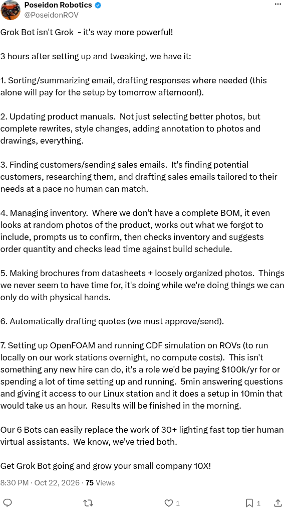
曝光最大的一条是一份完整的工具账单（177 万曝光）：每月必需 165 美元加 Whop 抽成，Whop 收款、Vercel + GitHub 建站、收件 bot 只起草不发、Notion 当 CRM、写手 bot 只起草，再加一个 Chief of Staff 每天出早报、顺便审计每个 bot。原帖
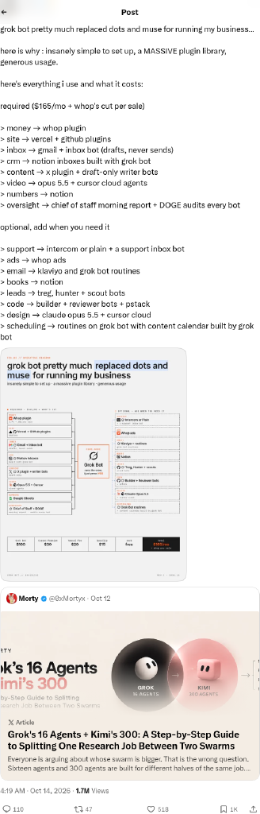
二、它们的共同结构
把这些案例放在一起看，结构其实非常像。
1. 先有一门已经有人付钱的生意。 物业、建筑、木作、代运营、制造，都是现金流已经在的业务。bot 没有凭空造出需求，它做的是让已有的需求更快地变成钱。
2. bot 接的是 loop 里人最慢的那一段。 一门生意的 loop 大概是：获客 → 响应 → 报价/合同 → 交付 → 开票收款 → 复盘。物业老板那条，赢在"秒回 + 2 小时出合同"；木作工坊赢在询价不再漏；建筑商赢在许可和文书。都不是让 bot 去"做生意"，而是把人拖慢的那一步拿掉。
3. 一个环节一个 bot。 不是一个万能助手，而是按业务环节拆：一个管线索，一个管跟进，一个管发票，一个管内容。Ads 代运营甚至是一个客户账户一个 bot。拆开以后每个 bot 的权限、connector、记忆都是隔离的。有个同时管两家零售连锁的技术负责人，就是每个业务一个独立的 CRM bot 加独立 connector，客户数据不出外部服务。原帖
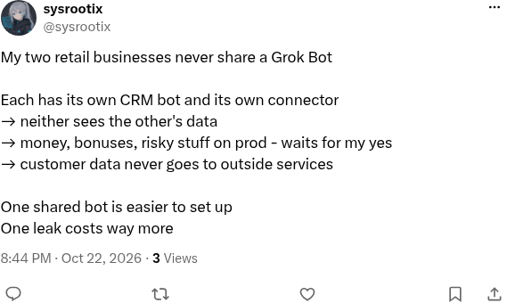
4. 审批点是设计出来的。 几乎每个认真用的人都划了红线：花钱、对外发出去、动生产环境，必须人点头。收件 bot 只起草，写手 bot 只起草，报价人来批。中文圈有个人把它写得特别直白："草稿自己干，发帖花钱必须我点头。"原帖
5. 真正的瓶颈在外部系统，不在 AI。 波兰那位说得最清楚：电子发票系统、会计、开票工具，这些为人和纸设计的系统才是卡点。模型能力已经够了，难的是接上那些不打算被 agent 接的东西。
三、为什么"从零赚钱"还没跑通
从零的帖子我也看了不少：有人公开挑战"5 个 bot 冲 5K 美元 MRR"，今天 Day 1，MRR 还是 0；有人画了 8 个 bot 的组织图，说"我只是批准按钮"，也是从 0 起步；有长文写《用 Grok Bot 跑一人公司》，组织图、周 routine、审批点、成本、30 天计划都有，但都是设想。曝光十几万、几十万的，大多是"今晚丢给 Grok Bot 帮你从零造一人公司"这类提示词模板，没有实盘。还有一些是交易收益截图、加密项目借 Grok Bot 推 skill，基本可以当营销看。
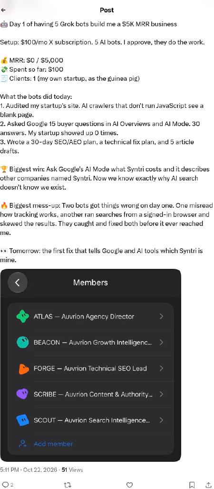
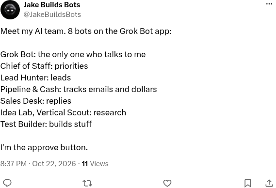
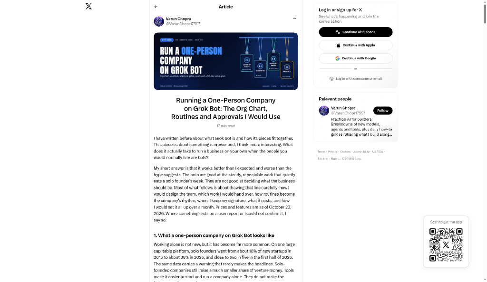
我觉得原因不复杂：bot 很擅长执行一个已经定义好的 loop，但它没法替你找到需求，也没法替你攒下信任。 而从零赚钱最难的恰恰是这两件事。另外还有一个很现实的问题，有人直接说重度业务按现在的额度根本用不起，也有人觉得它更适合 2B 生意但额度不够。
所以我现在的判断是：Grok Bot 让"一个人管一个团队"变得可行，但团队要有活干。活从哪来，还是你自己的事。
四、我自己是怎么用的
说实话，我现在没有在用它赚钱。我用十几个 bot 跑的是另一条 loop：找工作、几个项目的交付，还有每天的信息流。
但结构是一样的。我是先建了几个只读的 tracker（技术调研、舆情、开源趋势、播客、我自己每天公开发了什么），它们写得不好也不影响我，跑稳了才获得我的信任。然后才有了文件传输助手，作为我的 chief of staff 接到微信上，每天 8:30 给我一份合成的日报，帮我巡检邮箱、列出要我回的事。再然后才给执行权，让 coding agent 在共享电脑上干重活，一个项目一个 bot。后来 bot 多了，又长出了管基础设施的中台和一个兜底的 bot。
审批点我也是这么划的：对外的邮件和消息，bot 只起草，我自己按发送。
五、如果你想用 Grok Bot 闭环一门生意
把上面这些揉在一起，我的建议是：
- 先选一个已经有人付钱的环节。 没有现成的生意，就先从你已经在做、别人愿意为之付钱的事开始，哪怕很小。
- 把 loop 画出来，找人最慢的那一步。 获客、响应、报价、交付、收款、复盘，哪一步是你拖着的，先让 bot 接那一步。
- 一个环节一个 bot。 权限、connector、记忆分开，出问题好查，也好删。
- 先只读，再执行。 先让它汇报、起草，跑稳了再放权。
- 把审批点写死。 花钱、对外发、动生产环境，一律你点头。
- 记账本。 每月花了多少额度和工具费，换来了多少单、多少时间。这是现在 X 上最缺的东西，也是唯一能说服别人的东西。
最后
翻完这一圈还有一个观察：英文圈已经有人把"账单 + 分工 + 审批点 + 卡在哪"写到很细的颗粒度了，中文圈基本还停在功能介绍和口号。